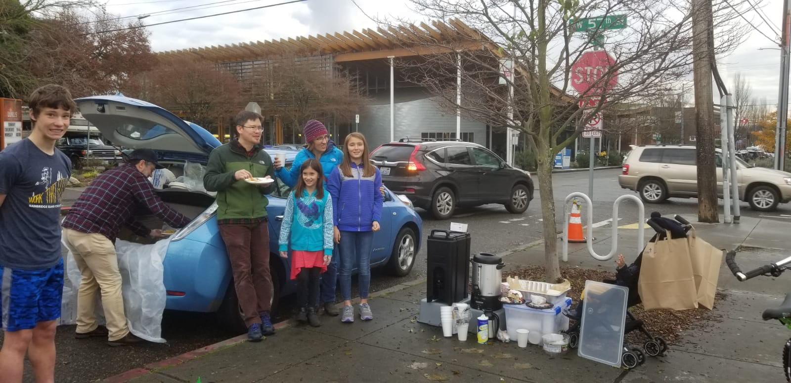
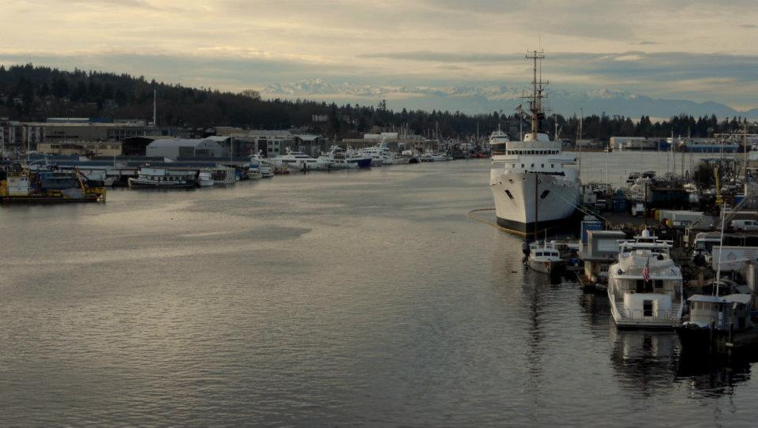

- 
- 
Ballard Commons Sunday Meal
Welcome to the Ballard Commons Sunday Meal website. Here you can find information on what servies we provide, information on how to volunteer and how you can donate to our non-profit. Ballard Commons Sunday Meal serves the beautiful Ballard community every Sunday 12:30-1:30pm.in the heart of the Ballard Commons Park, located off Market Street. The organization is maintained soley through generous donations by our donors! THANK YOU! If you are interested in donating please visit our Go Fund Me Page:Go Fund Me